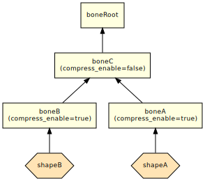

News for Developers
This document describes the changes for developers in NintendoSDK 5.1.0.
- News for Developers
- General
- nn::g3d News ()
- Resizing by specifying a percentage is now possible in 3D Texture Converter.
- Using the assign utility, a different shader can now be allocated while inheriting the existing shader parameter values.
- Improved the shape compression feature.
- Improved the feature for converting from rigid body to rigid skinning.
- nn::vfx News ()
- nn::ui2d News ()
- nn::font News ()
- nn::atk News ()
- nn::spy News ()
General
Problems Involving Conversion to bc1 / bc2 / bc3 Format Textures
The following is a description of workarounds for the problems relating to the new encoders for bc1 / bc2 / bc3 format textures introduced in NintendoSDK 5.0.0. (Revision History 5-0-0S56: (TOOL) Improved quality when converting to the bc1, bc2, and bc3 formats using the texture converter.)
There are two problematic areas, and the only way to deal with both at the same time is to define a value of 0 for the NINTENDO_TEXTURE_CONVERTER_NVTT_BC123 environment variable when using the NintendoWare tools.
Problem 1: Textures cannot be converted correctly to the bc1 / bc2 / bc3 formats on unsupported GPUs.
- Due to changes in the bc1 / bc2 / bc3 format encoders, conversion only works on Kepler and later generations of NVIDIA GPUs.
- If the GPU is a non-NVIDIA chip, then conversion automatically takes place in the CPU, but if the GPU is an unsupported NVIDIA chip, then the texture is output with an indefinite value (for example, it is output as a pitch black texture) without displaying an error.
Resolution
- Use the previous encoder (which defines the
NINTENDO_TEXTURE_CONVERTER_NVTT_BC123environment variable with the value0). - Disable GPU encoding in the 3D texture converter options (
--gpu-encoding false).- For information about how to set this option from the various NintendoWare modules, see the respective manuals.
- Use a Kepler or later-generation GPU. (For NintendoSDK, we recommend the Maxwell 1st generation or later.)
Support Planned for NintendoSDK 5.2.0
- The 3D texture converter will be able to work correctly on unsupported GPUs.
- The 3D texture converter option for selecting whether to encode using the GPU (
--gpu-encoding) will be extended.- When the option is specified as
--gpu-encoding true, an unsupported GPU will generate an error. (Non-NVIDIA GPUs will always generate an error.) - When the option is specified as
--gpu-encoding false, encoding will always take place in the CPU (as before). - When the option is specified as
--gpu-encoding auto, encoding will always take place in the GPU if possible, and in the CPU if not (behaves liketruebefore). - If the
--gpu-encodingoption has not been specified, the default behavior is the same as when--gpu-encoding trueis specified.
- When the option is specified as
- The various NintendoWare modules will be able to handle the use of
--gpu-encoding.
Problem 2: Low compression quality of A component in bc3 format
- Due to changes in the bc3 format encoder, sometimes A component pixels that were a value of
0become small, non-zero values.
To make it easier to discern differences in the next image, the A component (0-255) is bi-level with a threshold of1.
Resolution
- Use the previous encoder (which defines the
NINTENDO_TEXTURE_CONVERTER_NVTT_BC123environment variable with the value0).
Support Planned for NintendoSDK 5.2.0
- A new encoder will yield better compression quality for the A component in bc3 format.
nn::g3d News ( )
)
Resizing by specifying a percentage is now possible in 3D Texture Converter.
The size of the input image can now be specified using a percentage with the --resize-w and --resize-h options in 3D Texture Converter.
Using the assign utility, a different shader can now be allocated while inheriting the existing shader parameter values.
The --keep-existing-values option has been added to the assign subcommand in the assign utility. Specify this option to have newly allocated shaders inherit the shader parameter values originally included in the input model intermediate files that have matching ID and type information.
Improved the shape compression feature.
Reduced a problem where specifying the --ignore-skinning-count option during shape compression in the intermediate file optimizer causes intermediate file gaps to appear between shapes due to different skinning methods, even though the shapes were contiguous originally. This change standardizes the skinning method among contiguous shapes, but the data size may also increase as a result.
Improved the feature for converting from rigid body to rigid skinning.
When using the intermediate file optimizer's feature for converting rigid body to rigid skinning, all rigid body shapes linked to bones set to enable compression (compress_enable=true) had the specification to be bound to root bones. For this reason, bone visibility animation for shapes converted to rigid skinning could only be applied by setting bones linked to those shapes to disable compression (compress_enable=false). As a result, shape compression could not be performed for converted shapes.
The specification has been changed so that converted shapes navigate parent bones and become associated with the first bone that is found with disable compression. Shape compression now works for shapes belonging under bones set to disable compression. The following are a few examples.
| Before Conversion |

|
| Conversion Results in the Past |
|
| Conversion Results for NintendoSDK 5.1.0 and Later |
|
nn::vfx News ( )
)
None.
nn::ui2d News ( )
)
None.
nn::font News ( )
)
None.
nn::atk News ( )
)
New Default Priority Values for Sound Threads and Task Threads
The default priority values for sound threads and task threads have been lowered, as shown in the following table.
| Thread Priority | Before Change | After Change |
|---|---|---|
| The thread priority for sound threads (nn::atk::SoundSystem::SoundSystemParam::DefaultSoundThreadPriority) |
nn::os::HighestThreadPriority | 4 |
| The thread priority for task threads (nn::atk::SoundSystem::SoundSystemParam::DefaultTaskThreadPriority) |
nn::os::HighestThreadPriority | 3. |
If you are using the default priorities for sound and task threads, and want to restore the priorities to the values that were in use prior to 5.1.0, you need to increase nn::atk::SoundSystem::SoundSystemParam::soundThreadPriority and nn::atk::SoundSystem::SoundSystemParam::taskThreadPriority to nn::os::HighestThreadPriority.
nn::spy News ( )
)
None.
CONFIDENTIAL